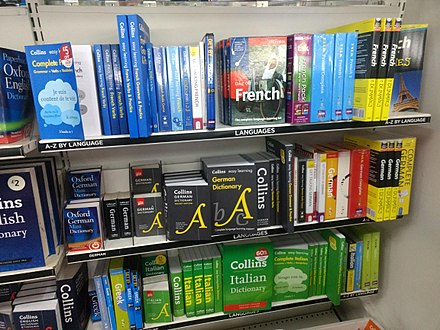

Being bilingual means that your are a jack of all trades, master of none. Yes, maybe better than a mster of one, but not really. You see, you are never going to truly converse in more than one language with other people. That means they will see you as a master of none. Not to mention the habitual swapping of languages midway in a sentences, or mixing of idioms or words.
就是说，学两三个语文不是真的有好处，有的时候，就很麻烦。
Oui, c'est difficile d'etre billingue. quand je parles, parfois j'echange les langues durant quand je parle, ou parfois j'oublie un mot dans un langue et reconnait le mot dans l'autre. C'est ennuyante ca!
This table will display a couple common greetings people say in three languages, that I sometimes mix up

| English | French | Mandarin |
|---|---|---|
| Hello | Bonjour | 你好 |
| good night | Bonne nuit | 晚安 |
| thank you | merci | 谢谢 |